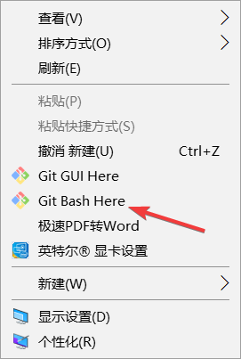

前言
你好啊，当你阅读我的文章时说明你可能想要去安装或者在安装过程中遇到了困难。这篇文章正好适合你。
准备工作
正式开始
1. 新建文件夹
新建一个文件夹名称随意，我的是blog,双击进入后，点击鼠标右键上面会有Git Bash Here点击进入。

2. 设置SSH Key 参考地址
3. Github新建项目
Github新建项目，项目必须要遵守格式：账户名.github.io，不然接下来会有很多麻烦。并且需要勾选Initialize this repository with a README
4. 开始安装hexo
1 | npm install hexo -g |
5. 初始化hexo
1 | hexo init |
6. 安装项目依赖
1 | npm install |
7. 生成博客页面并启动服务，本地查看地址：http://localhost:4000/
1 | hexo g && hexo s |
8. 修改_config.yml 中的deploy 配置
1 | deploy: |
9. 部署网站
1 | hexo g && hexo d |
结语
第一次写可能会表诉的不够清楚，如果在这过程中遇到什么问题可以来问我，我们一起解决。